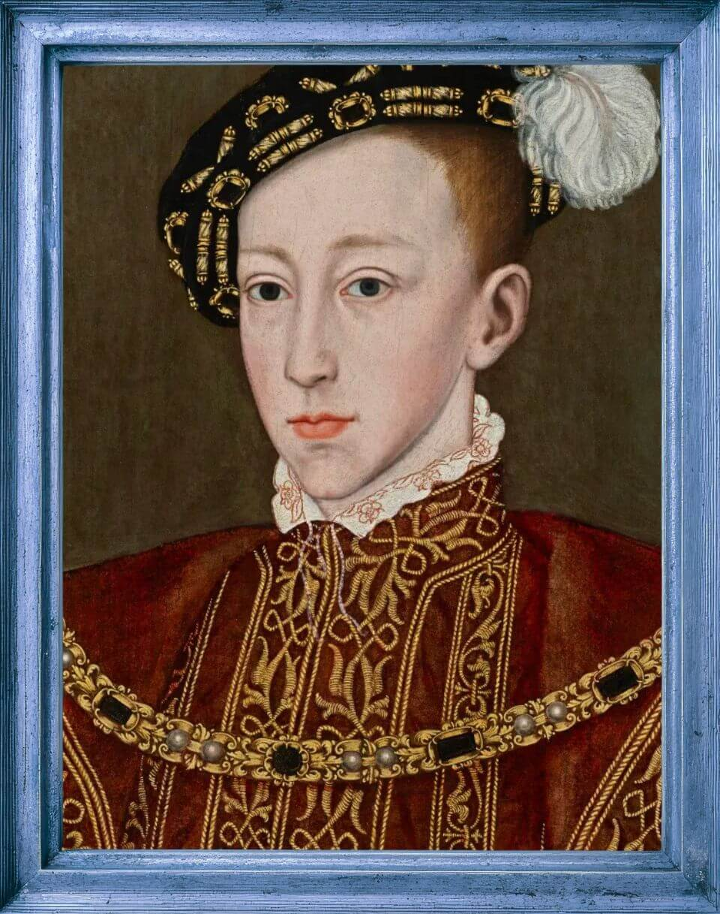

More Jane Seymour Facts
Not much more about Jane is known, but you're sure to find more information about her upbringing, siblings, and life in this article!
If Catherine and Henry's marriage was filled with strife, and Anne's marriage explosive, then Henry's marriage to Jane was definitely what you could call placid. By this time, Henry was 45 years old and could not be considered "the handsomest prince in the world" any longer. At this point in life, Henry wanted peace, quiet, and an heir. Jane represented all three of these to him. Coming from what was then considered a fertile English country family, Jane was also meek, mild, and docile when compared to the tumultuous and passionate Anne Boleyn. Due to her country-style upbringing, Jane was educated in running a household estate and not educated in the traditional sense.
While still married to Anne, in 1535, Henry visited the Seymour family home, Wolf Hall, in Wiltshire, England. It was during this visit that Henry met Jane, but it is unclear if that is when the attraction began. Then Jane came to Court to serve then Queen Anne, and things began to ramp up.
By this time, thanks to Anne Boleyn, there were new political factions in England that centered around religion. The Catholics were loathe to give up the traditions and faith they loved to switch to Henry's almost Protestant leanings. Those who supported Rome and the Catholic Faith rallied behind Jane, as they hoped she would influence the king to go back to Rome. And then there were those who had something to gain from Anne's marriage who did their best to convince Henry to stay with her.
It is historically noted several times that Anne was well aware of the initial flirtation, but thought Jane Seymour was plain and she had nothing to worry about. It wasn't until she walked in on Henry kissing Jane and miscarried a third baby in the ensuing tantrum she threw, that Anne realized she was on thin ice with the King.
Perhaps Anne's biggest concern became that Jane had taken a page out of her own courtship book and publicly refused to become Henry's mistress.
Of all six wives, Jane Seymour was and still is considered to be "the favorite wife."
It was a time of peace in Henry's life and many attribute his fair mood throughout to Jane. Jane was the only one of his wives to receive a state funeral and the only one to be buried beside him in St. George's Chapel at Windsor Castle. Of course, Jane's biggest claim to fame is that she finally achieved what Henry's previous wives did not: she gave birth to a legitimate male heir, Edward Tudor, at Hampton Court in 1537. And if that doesn't give her GOAT status, tell me why he had a "family portrait" commissioned, much later while he was married to Catherine Parr, that showcased Edward VI, himself and—not Catherine—but Jane Seymour, posthumously! (Ouch!)
Not much more about Jane is known, but you're sure to find more information about her upbringing, siblings, and life in this article!
King Edward Tudor VI ascended the throne in 1547, at the tender age of 10. He was the first king to rule over England as a Protestant. Although he couldn't complain of his treatment, he was King in name only, his uncle (Jane Seymour's brother Edward) was the one running the country until Edward grew old enough to begin taking over matters, himself.
Edward had a household of servants from birth, and so was not raised with the benefits of a family around him. Although he loved and respected his elder sisters, he didn't have very much contact with them, and Henry rarely visited. High-born ladies of the court had been chosen to raise him according to the King's wishes. Only high-born gentlemen were permitted to attend the prince. These facts, combined, convince most historians that Edward was a very lonely little boy.
However, descriptions of young Edward include mature beyond his years, affable, and gentle. When it came to learning, Edward was very engaged and every bit as facile as his father according to his tutors, who were considered to be some of the most learned men in the world at the time. At just six years old, Edward was taught Latin and Greek, classical authors, and scripture.
Unfortunately, this Tudor's reign was cut short, when King Edward VI passed away after a long illness at the age of 16. How ironic that the "savior of Henry VIII's dynasty" only reigned for a total of six years.
